梅吉流お作法 [梅吉]
朝のお茶タイムに梅吉さんがやってきました。
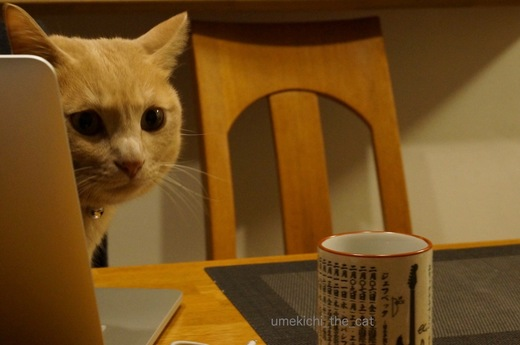
![[猫]](https://blog.ss-blog.jp/_images_e/101.gif) おちゃのあじわいかたっちゅーのはな・・・・
おちゃのあじわいかたっちゅーのはな・・・・
※湯飲みの中は白湯ですよー。
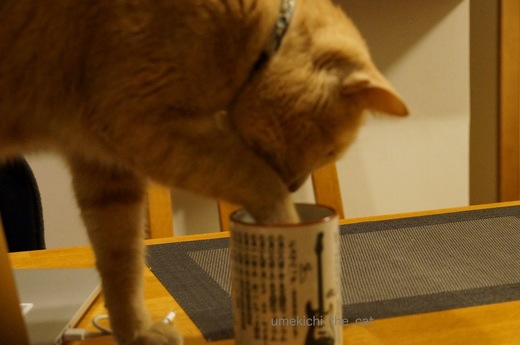
じゃぶ・・・・
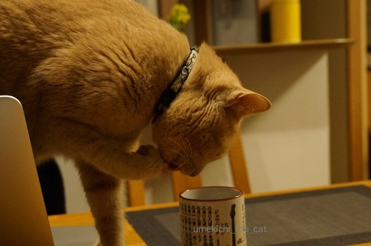
うむ。
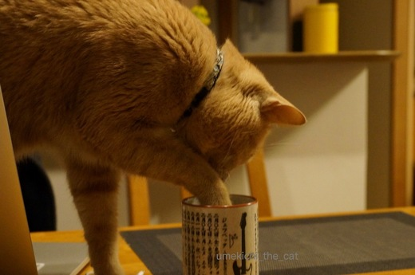
じゃぼんっ
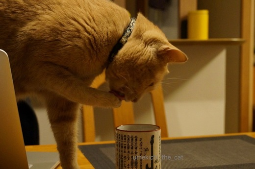
べろべろ
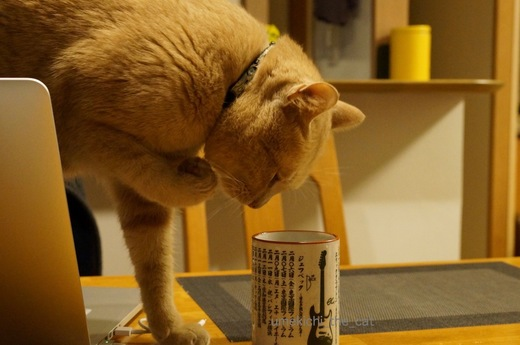
じ〜〜〜〜っ
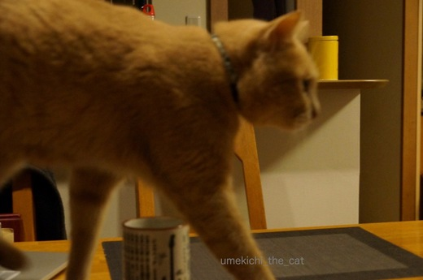
けっこうなおてまえやったで。
手で味わいあたりをびしょびしょにして去ってゆくのが梅吉流のようです。涙
おとーさんの湯飲みはちゃんと洗って熱湯をかけておきましたよ〜。
梅吉出汁が効いた白湯も良かったかな・・・
 ↑ガブッと一押し↑
↑ガブッと一押し↑
写真をみてびっくりしました。
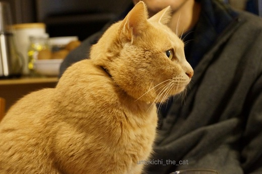
梅吉の肩のあたりムキムキじゃないですか？
冬毛がそう見せている？最近お気に入りの遊びで筋肉がついた？
マッチョな梅吉・・・・
ダイエットは良いけどそっちの方向は望んじゃいないぞ〜。
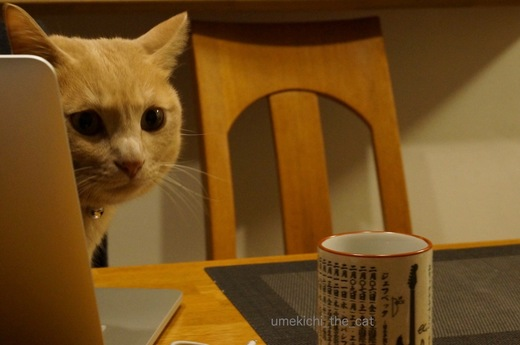
※湯飲みの中は白湯ですよー。
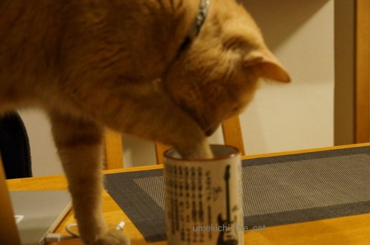
じゃぶ・・・・
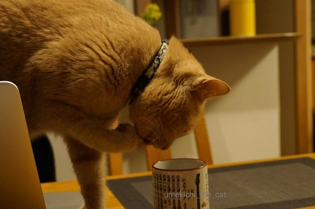
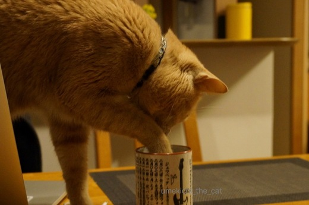
じゃぼんっ
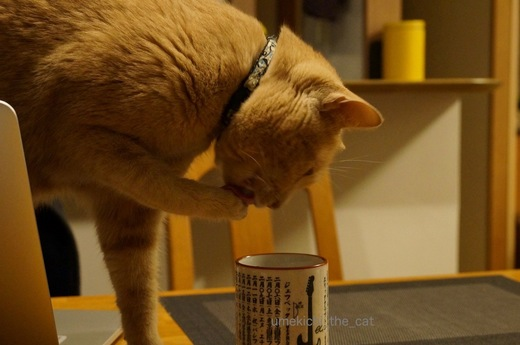
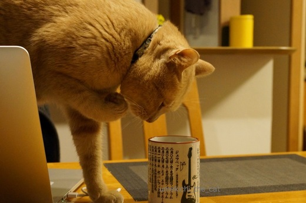
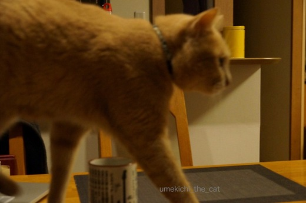
手で味わいあたりをびしょびしょにして去ってゆくのが梅吉流のようです。涙
おとーさんの湯飲みはちゃんと洗って熱湯をかけておきましたよ〜。
梅吉出汁が効いた白湯も良かったかな・・・
写真をみてびっくりしました。
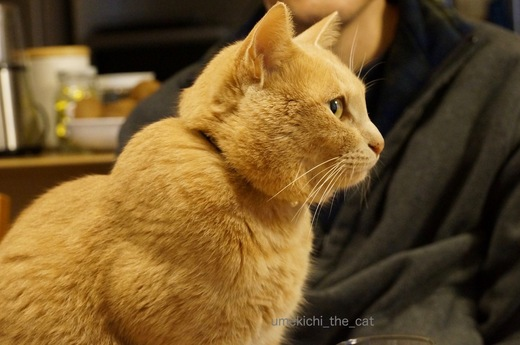
梅吉の肩のあたりムキムキじゃないですか？
冬毛がそう見せている？最近お気に入りの遊びで筋肉がついた？
マッチョな梅吉・・・・
ダイエットは良いけどそっちの方向は望んじゃいないぞ〜。

カフェオレ色の梅吉

梅吉 2023年8月10日 永眠


梅吉と出会った譲渡会

犬猫の理由なき殺処分ゼロ
妄想広告
UMEKICHI 光

爆発的に早い！
時々攻撃的！
Thanks to Mr.Boss365
爆発的に早い！
時々攻撃的！
Thanks to Mr.Boss365

梅吉さん、上手に手をご使用ですねぇ( ^ω^ )
先代猫はかみさんのマグカップに顔を突っ込んで水を飲みながら、
だんだん傾けて最後まで飲みきる！という技を身につけてました♪( ´▽｀)
なのでかみさんが飲もうとするとコップが空w
梅吉さん、めちゃくちゃマッチョさんに(°_°)
もしかして虎を目指してる？w
by ニッキー (2017-01-31 13:25)
ムキムキの梅吉さんに笑ってしまいました。
盛り上がっていますね〜
どうしたの〜
1枚脱がなくては（笑）
by kiki (2017-01-31 14:46)
おぉ～！梅吉さん！結構なお手前で（笑
確かにムキムキに見えますねぇ～♪
マッチョな男を目指して
もっと遊びに精進してください(#^.^#)
by きぃ (2017-01-31 16:08)
梅さん、いい仕事してますねー(^ ^)
by KENT0mg (2017-01-31 19:14)
きなこも勝手に人のコップに手を突っ込みます(T_T)梅吉君マッチョもいいんじゃない？？
by palpal (2017-01-31 19:33)
梅吉さん、湯飲みを使いこなしてますね(*^▽^*)
お兄さん、ええ体してるね～って自衛隊に勧誘されちゃうかも？！
夜中に黙々と腕立て伏せしてたりして^^;
by ゆきち (2017-01-31 20:09)
梅吉さん、熱くないのかな？
私は何気に、ジェフベックの湯呑みに目が行ってしまいました。^^;
ムキムキ梅吉さん、筋肉が付いちゃうと逆に体重が増えてしまうかも。^^;;
by yes_hama (2017-01-31 21:28)
あらホント(・o・)ムキムキ。
ゆづは獣医さんに
｢やっぱり男の子だけあって筋肉質ですね｣
と言われたことがあります〜(^^)
ネコ様も男の子と女の子で違うんですねぇ。
by も〜 (2017-01-31 23:47)
あかんー。こんな写真みしたら
隠れてライザップにかようとるのん
ばれてまうやろー！
、、、との梅吉さんの心の声。
by よーちゃん (2017-02-01 08:10)
わお、マッチョだよーー！
かっこいい^^
梅吉くんがジョボンした湯飲み、熱湯かけるなんてすごい！
わたしなんて水洗いしてまた使っちゃう(笑)
by リュカ (2017-02-01 10:21)
ちぃさんは湯ざまし派…？
梅吉君、器用ですね。うちのはこういう時、湯飲みに顔を突っ込んで、水に届かなくて、そのままの状態で手をワシャワシャするタイプです。
さっき他所様のブログでコメントを送信前に見直してたら、「梅が綺麗ですね」の「梅」が「梅吉」になってました。梅吉君連呼し過ぎてうちのiPadの変換がもう…
by BillK-ko (2017-02-01 10:22)
さすが梅吉流家元！お手前の後はクールに去って行くんですね。
マッチョな身体でアバクロにスカウトされないように！
by じゅらまろ (2017-02-01 13:13)
梅吉さん、マッチョでもいいじゃないですか！(笑)
ルディとマッチョコンビ組みましょう！(￣▽￣)
by ルディパパ (2017-02-01 15:53)
ニッキーさん＞先代猫さんはすごい技をお持ちだったんですねー。コップが空。
今、梅吉にそれをされると「来たか・・・・若年性認知症・・・」と目の前が真っ白になりそうです！
梅吉はトラを目指していると！
梅吉までが関心を寄せるということは今年はタイガース優勝！？
よーちゃんにお知らせしときます！！！
kikiさん＞モリモリっ！てすごいですよね〜。
体重はリバウンドもなくむしろ更に落ちたくらいなんですよ。
冬毛の一枚、脱いだらもっとすごかったりして！笑
きぃさん＞梅吉のやんちゃなお作法はねぇ・・・あとで拭くのが大変でしたよ。
カメラ構えてないで止めれば良い・・・とのご意見はスルーです。笑
マッチョ系苦手なのでムキムキしない遊びに切り替えたいと思います(ΦωΦ)
KENT0mgさん＞梅吉、良い出汁を引いてあたりに散水をして去ってゆきました。
男の仕事です。はい。
palpalさん＞きなこちゃんも人間の飲み物に興味あり、なんですね〜。
昨今の癒し系猫ブームの中でマッチョ系ねぇ・・・インパクト大で良いかしら。
目指しちゃおうかしら。笑
ゆきちさん＞正しい湯飲みの使い方と言えましょう・・・
そのうち、自衛官募集！のポスターに梅吉が採用されるかもしれません。
見かけても鼻の穴にがびょう刺さんといてね。笑
yes_hamaさん＞湯飲みの中は程よく冷めてますよ〜。
お風呂のお湯はり時にも浴槽からお湯を飲んでいるので42℃くらいまでは
大丈夫そうです。
ジェフ・ベック湯のみに目を止められましたか！！！！
2009年2月のジェフ・ベック＆エリック・クラプトンのジョイントライブで
買ったグッズなんですよ〜。おっとの宝。
も〜さん＞女子ねこは骨格も華奢ですよね。ねこでも女子と男子は結構違うんだと思いました。
でもマッチョ系ってどうなのよ〜。もうシンガプーラみたいなシュッとしなやかな筋肉質を目指そうかしら・・・
よーちゃん＞ふふふ、ライザップ通いの成果を宣伝しているのかもしれませんよ。
そうそう、梅吉はマッチョになってトラを目指しているとニッキーさんのご指摘が。
梅吉まで関心を寄せるトラ、今年はタイガースに何かあるのかも！？
リュカさん＞マッチョな梅吉、ボディービルダーみたいに
テラッテラしてなくて一安心です。笑
湯飲み、梅吉くんおトイレのあとだったのーww
いつもだったらお水ジャーよ。
BillK-koさん＞寝覚めは白湯派ですよ。冷たいお水がしみすぎるお年頃です。笑
手をワシャワシャする姿想像できます！かわいい！かわいすぎ〜。
ほうほうiPadが勝手に「梅吉」変換を・・・害はない症状かと思いますが
念のためお薬５日分処方しておきますよー(๑˃̵ᴗ˂̵)و
私はBillK-koさんのスペルを大文字小文字いちいち確かめることなく
打てるようになりました！！！
じゅらまろさん＞アバクロに！きゃ〜！！
なんか男性モデルのヌードのイメージなんですけどー。
梅吉、ムダ毛の処理しなきゃだわ〜。
by ちぃ (2017-02-01 15:56)
ルディパパさん＞ルディくんはしゅーっとしなやかな筋肉質じゃないですかー。
梅吉はアメフトのプロテクターつけているみたいな不自然なムキムキなんですよね。
あ、対照的でコンビには打ってつけ？
じゃあ、コンビ結成よろしくです。笑
by ちぃ (2017-02-01 16:01)
いまさらですが、梅吉さんてとてもハンサムですね。
by 粋田化石 (2017-02-01 22:56)
粋田化石さん＞我が家にやってきた時には
困り顔の情けない顔の子だったのがすっかり立派になりました。
ムキムキが男ぶりを⤴︎でしょうか。笑
by ちぃ (2017-02-02 12:59)